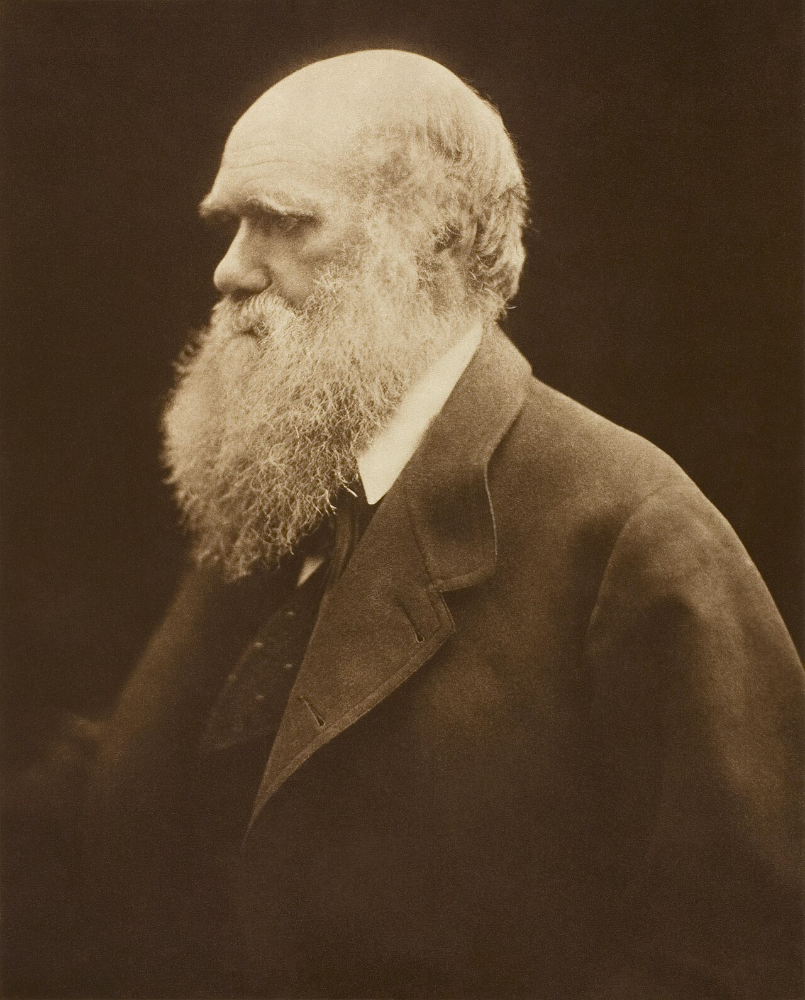
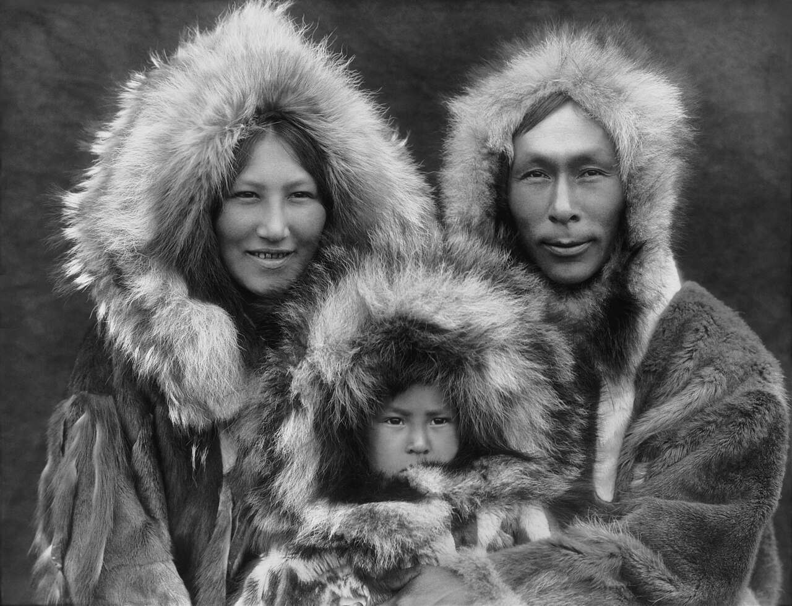

我的摄影实践 · 第 6 讲
同一张脸，站在窗口左边和窗口右边，会是两个人。这一讲只教你两件事：怎么判断光从哪个方向来，以及这束光是硬的还是软的。
上一讲 第 5 讲 · 取景的四个决定 · 下一讲 第 7 讲 · 怎样拍人 → · 参考 构图与用光
前面几讲我们一直在跟相机打交道：光圈、快门、ISO、景深、取景。 那些都是「怎么把已经在那里的光收进来」。这一讲不一样——我们开始动光本身。
好消息是：用光这件事听起来玄，其实入门只需要两根轴。 所有布光的书、所有影棚的灯位图、所有「为什么这张照片好看」的解释， 最后都能挂回这两根轴上：光从哪个方向来，以及它有多硬。
第一根轴是方向：光从相机背后打过来（顺光）、从侧面打过来（侧光）、 还是从主体背后打过来（逆光）。第二根轴是质感：这束光落在主体上的边缘是锋利的还是柔和的， 也就是硬光还是软光。
为什么先学这两根？因为它们可以现场改变。亮度、颜色、器材你可能改不了， 但你可以挪一步、转个身、拉半扇窗帘——方向就变了。一个摄影师最值钱的动作， 往往不是按快门，而是绕着主体走那几步。
把相机、主体、光源摆在桌面上看，就只有这三种关系。下面的图是俯视图： 上北下南，相机在下方，主体在中间，三个光源分别站在三个位置——注意每个光源对应的影子落在哪一边。
第一条路：干脆不要脸，要形状。曝光对着画面里最亮的地方（天空）， 主体就沉成一片黑——剪影。这条路适合形态本身就清楚的东西：一双手、一棵树、一条船、 一个人走路时挺直的轮廓。剪影的规矩是形状必须一眼认得出， 认不出的黑块只是曝光失误。iPhone Air 操作：点一下天空，把画面压暗，然后别再管主体。
第二条路：留住脸，让背景白掉。曝光对着人脸，
背景于是过曝成一整片亮，人物被光「包」住，气氛立刻变温柔。
iPhone Air 操作：先点住人脸对焦，再把小太阳往上拖一到两档
（大约 +0.7 到 +2 EV）。代价明确：背景里的天空、树叶、远处的灯会丢细节。
接受它，这张照片就是对的；不接受，就走第一条路。
还有一条小路：如果既不想黑脸也不想过曝，让光只从肩膀或头发边缘漏一点出来， 描一圈细亮线——这圈线叫轮廓光。合照里站在别人头后面的人， 常常靠这条线才不至于和背景糊在一起。
「软硬」不是形容光的强弱，是形容影子边缘的形状。 而决定软硬的只有一件事：光源相对于主体有多大。大，就软；小，就硬。 注意这里的关键词是「相对」——同一盏灯，贴着人脸就是个大光源，退到房间另一头就变成小光点。
顺手说一句颜色：光不但有软硬，还有冷暖。影子里偏蓝、黄昏偏暖不是错觉， 是色温在起作用；原理和怎么对付，见 Cambridge in Colour：白平衡。
没有「哪种光更好」，只有你想让观众看见什么。
硬光的活是线条、戏剧性和纹理。沙丘的脊线、老人的脸、建筑的外立面、 食物表面的那层油光——都是硬光才拍得出来的东西，因为它把微小的起伏变成明确的明暗块。 硬光也负责强烈，一个黑影砸在墙上，画面立刻有了脾气。
软光的活是好看、温柔、什么都不丢。它把脸上的每一点细节都照到， 却又不会夸张，所以拍人时软光通常更省事：不用求对方姿势，也不用担心鼻影和眼窝被放大。 阴天、窗边、树荫底、傍晚——都是自带的软光棚。
反过来说，硬光拍人很容易出事：鼻影重、眼窝黑、皮肤纹理加倍。 真要用，就把它当风格用（比如让光从一侧斜切过脸），而不是当默认用。
| 方向 × 场合 | 光从哪来 | 画面效果 | 什么时候用它 | 小心 |
|---|---|---|---|---|
| 顺光 | 相机背后 | 平、亮、颜色准；阴影藏在主体背后 | 想让肤色干净、想保险；证件照、记录型的合影 | 没立体感、容易「证件照感」；闪光灯正面直打最典型 |
| 侧光 | 侧面，约 45°~90° | 明暗交界清楚，形状、纹理、立体感都出来 | 拍人、拍食物、拍老墙与树皮；拿不准就用它 | 明暗差可能超出相机能同时留住的量，暗部会糊成一团 |
| 逆光 | 主体背后，打向相机 | 剪影，或背景过曝、主体被光包住 | 要形状（剪影）、要温柔的氛围、要轮廓光 | 不选路就两头落空：脸黑、背景还亮 |
| 硬光 / 软光 | 硬光 | 软光 |
|---|---|---|
| 光源 | 相对很小：正午太阳、裸灯泡、机内闪光灯 | 相对很大：阴天天空、纱帘后的窗、灯加柔光罩、白墙反弹的光 |
| 阴影边缘 | 锋利、像一条线 | 模糊、拖成一段渐变 |
| 擅长 | 线条、戏剧性、纹理（沙丘、老墙、食物油光） | 肤色好看、温柔、细节都留住 |
| 风险 | 明暗差太大，暗部丢细节 | 太平、没立体感、缺层次 |
| 拍人 | 当成风格工具，慎用 | 首选 |
| 什么时候遇到 | 晴天正午、直闪、头顶灯 | 阴天、清晨黄昏、窗边、树荫下 |
如果只能记一个时段，记这个：清晨和黄昏。太阳低，光斜着扫过地面， 于是阴影被拉长、方向变成天然的侧光，色温偏暖，人脸上的过渡也变软。这是最省事的时段， 好到有人叫它「黄金时段」。
正午非拍不可的话，有两个便宜办法：把人挪到墙或建筑的阴影里（那里是顺光，反面还是软的）， 或者干脆接受硬光，把它当风格——找一个侧脸、一个浮雕、一道栏杆的影子。
看照片的时候，除了「好不好看」之外，多加一句「他当时在跟哪一种光打交道」。 下面三张，恰好是三种完全不同的处境。


想自己去看原作的高清细节——那些影调层次在缩略图上根本看不出来—— 可以从纽约大都会艺术博物馆、 盖蒂博物馆 和荷兰国立博物馆 的藏品页开始。看原作本身就是学习，尤其是看阴影里到底剩下了什么。
两台机上的用光，九成不是「加设备」，而是「挪位置」。顺序也和其他讲不一样—— 不是先构图，而是先找光。
这一讲的「大光比」，正好是两台机差别最大的地方。 iPhone Air 走的是算法路线：智能 HDR 5 与夜间模式会连拍好几张、按亮暗分别取信息， 再合成一张 HEIF/JPEG。好处是拍完立刻能用；要留意的是，那张照片里最亮的高光 是它算回来的——看着没爆，放大到天空或灯光的位置，往往只剩一层糊， 很暗的地方也是算法替你「补」出来的。
Osmo Pocket 4 走的是「真的装下」的路线：它标称 14 级动态范围， 支持 HDR 拍照，一次就把大光比容进画面；还能存 DNG， 把「亮部压多少、暗部提多少」留给你自己定。一句话分辨： Air 是「算法帮你把高光拉回来」，Pocket 4 是「它真的没爆掉」—— 前者的层次是重新造出来的，后者的层次原本就在。所以傍晚窗边、路灯下这类大光比场景， 认真拍用 Pocket 4，顺手记录用 Air。
还有一件 Pocket 4 的专长：它可以配一个磁吸补光灯， 吸在机身上、有三档亮度与色温。它正是这一讲说的那种「小柔光」—— 与其事后在修图里把暗掉的脸提亮（提亮的同时噪声和色斑也跟着起来）， 不如拍之前先把它吸上、选一档，让光真的落在人脸上。逆光或暗光拍人时，这是最省事的一步。
规格来源：Apple 官方 iPhone Air 技术规格、 iPhone Air 页面， DJI 官方 Osmo Pocket 4 与 规格页。
练习（十五分钟）：绕着一件东西走一圈
做完你会得到一个比公式更好用的东西——身体记住了「光在哪」和「我该站哪」之间的关系。
1. 顺光、侧光、逆光，影子分别落在哪一边？哪一种最平，哪一种最有用？
顺光的影子落在主体背后，被主体自己挡住，所以画面最干净也最平（容易有证件照感）； 侧光的影子横向拖到主体一侧，中间那条明暗交界把形状和纹理交代出来，是最有用的一档； 逆光的影子朝相机的方向铺过来，主体压成暗块、只留边缘亮光，出彩也最容易翻车。
2. 为什么阴天的光很软，正午的太阳很硬？「软硬」到底由什么决定？
由光源相对于主体的大小决定：光源越大越软，越小越硬。 阴天时整片天空都是光源，等于一个巨大的柔光箱，无数个小影子叠在一起，阴影边界被摊成渐变； 正午的太阳在天上只是一个极小的点光源，影子边界就被切得很锋利。 室内同理——窗帘、薄纱、把灯挪近，都是在「把光源变大」。
3. 逆光拍人、想让脸是亮的，在 iPhone Air 上要做什么？代价是什么？
两步：先点住人脸对焦测光，再把小太阳往上拖一到两档
（约 +0.7~+2 EV）。代价是背景过曝——天空、树叶、远处的灯会丢掉细节，
可能变成一整片白。如果不接受这个代价，就走另一条路：曝光对着亮处，干脆拍成剪影，只保留形状。
这一讲哪里没说清？回到 OpenCode 里直接问你的老师（那个正在运行 teach
的 agent）——它比你更懂你的目标，可以为你重新举例、加练，或跳到你想深入的部分。
告诉它你常拍什么（家人、食物、街景），它就能把「先找光，再取景」那一节换成你真实场景里的走位路线。
推荐一手资料：
《美国纽约摄影学院摄影教材》
的「用光」部分 —— 顺光、侧光、逆光与软硬光那一章，配合本讲读一遍，方向感会稳得多。
想再往深走一步，可以找《Light: Science and Magic》读：它讲的是光为什么会这样跑，是本讲的延伸
（书目见课程 资料清单）。
图片来源与授权：图片版权说明
（Cameron、Curtis、Adams 三张均为公有领域，署名见该文件）。
上一讲：第 5 讲 · 取景的四个决定 ·
下一讲：第 7 讲 · 怎样拍人 ·
机型分工：第 9 讲 · 两台相机
参考：构图与用光 ·
术语表